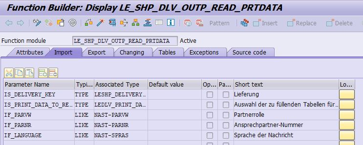
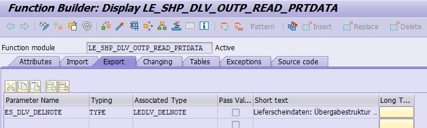

How to view the message return from standard SAP Function Module ?
Generally, you can view the message from Transaction Code (Tcode = SE91).
DATA: l_msg TYPE string.
CLEAR: l_msg.
CALL FUNCTION 'FORMAT_MESSAGE'
EXPORTING
id = sy-msgid
lang = sy-langu
no = sy-msgno
v1 = sy-msgv1
v2 = sy-msgv2
v3 = sy-msgv3
v4 = sy-msgv4
IMPORTING
msg = l_msg
EXCEPTIONS
not_found = 1
OTHERS = 2.
IF l_msg IS NOT space.
write: l_msg.
ENDIF.
As shown below the message can be display in Transaction Code SE91 for
Message Class = 00
Message Number = 002

Message = "Enter a valid value"

How to retrieve information for outbound Delivery (LE_SHP_DELNOTE) smartforms?
Koders can retrieve outbound delivery information based on the function module 'LE_SHP_DLV_OUTP_READ_PRTDATA'.
Attributes
Function Group = LE_SHP_OUTPUT
Short Text = Write delivery note data from database to print tables
IMPORTING
IS_DELIVERY_KEY TYPE LESHIP_DELIVERY_KEY
IS_PRINT_DATA_TO_READ TYPE LEDLV_PRINT_DATA_TO_READ
IF_PARVW TYPE NAST-PARVW
IF_PARNR TYPE NAST-PARNR
IF_LANGUAGE TYPE NAST-SPRAS

EXPORT
ES_DLV_DELNOTE TYPE LEDLV_DELNOTE

EXCEPTIONS
RECORDS_NOT_FOUND
RECORDS_NOT_REQUESTED
OTHERS
DATA: it_dlv_delnote TYPE STANDARD TABLE OF LEDLV_DELNOTE WITH HEADER LINE,
lv_delivery_key TYPE LESHP_DELIVERY_KEY,
lv_print_data_to_read TYPE LEDLV_PRINT_DATA_TO_READ,
lv_parnr TYPE nast-parnr.
CALL FUNCTION 'LE_SHP_DLV_OUTP_READ_PRTDATA'
EXPORTING
is_delivery_key = lv_delivery_key
is_print_data_to_read = lv_print_data_to_read
if_parvw = 'SP'
if_parnr = lv_parnr
if_language = 'E'
IMPORTING
ES_DLV_DELNOTE = it_dlv_delnote
EXCEPTIONS
RECORDS_NOT_FOUND = 1
RECORDS_NOT_REQUESTED = 2
OTHERS = 3
.
IF sy-subrc <> 0.
* Implement suitable error handling here
ENDIF.